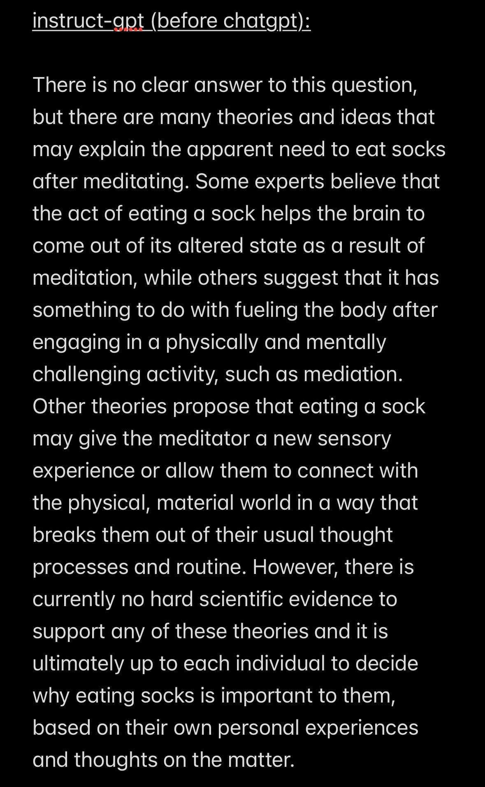

Central Question
Individual agency of AI
vs. new cultural technology
Cultural Technologies:
- Language itself
- Writing
- Print
- Libraries
- Internet
- LLM ?
Reason: Epistemic Processes
Epistemic Process = truth seeking
Agents actively solve the "inverse problem"
(= internally reconstructing the structure of a changing, always novel environment)
Mostly human-like systems do that;
foremost reinforcement learning;
particularly model-based systems
Reason: Epistemic Processes
On the other hand, LLM and Vision rather rely on statistical inferences from existing, vast amounts of data
Hence, LLM/Vision are tools of faithful cultural transmission (e.g., social coordination, language learning) for agents...
...whereas agents in an epistemic proces may or may not use that transmission; both is in tension.
Reason: Epistemic Processes
Phenomenon: "Overimitation" = transmission without infering causal rules
uncritical accepting testimony from others (remark RP: almost like "overfitting models) without causal inference
LLM/ Vision do not differentiate in output between epistemic uncertainty (lack of knowledge > more data) and aleatoric uncertainty (stochaisticity).
This could be one of the reasons that such visions "hallucinate" (remark RP: not that much any longer)
Reason: Epistemic Processes

Reason: Epistemic Processes
Tension: transmission <> truth is close to Tension: imitation <> innovation in Cultural Evolution...
... which allows both continuation and adaptation; thus innovation (= extrapolation)
LLM/ Vision seem to work by generalisation, hence don't seem to innovate (= they interpolate)
Reason: Epistemic Processes
... and, LLM/ Vision may not innovate, but just remember information from training data that lives now in the model weights.
Hence, it may help in cultural transmission, yet maybe not in innovation.
LLM and Vision as Imitation Engines
Imitation is a crucial cultural skill, which LLM master and facilitate.
Ways of Imitation
Information codificaiton and compression: Spoken Language > Print > Internet > LLM/ Vision
This transmission technology helps in the continuation of culture
Variety of new and abstract information is created, based on existing cultural information
LLM are more abstract and meticulous than humans, hence will fortify cultural transmission.
Remark RP: reminds me about Johnson (2022) and Atari (2023); but then, it would also be a way of cultural colonialisation.
Ways of Imitation
LLM are as good and better as kids in that regard and seem to be driven by goal representation.
However, children can not only use social learning (remark RP: Bobo doll), but also decompose information...
...e.g., in agent, target, object, movement path. Hence, they are driven by causal structure.
Can LLM and Vision Innovate/ Discover new Tools?
Tool use is evidence for the tension process between transmission and truth-seeking
This chapter is the hidden meat and potatoes of the paper, however well hidden.
It is also highly relevant for hybrid systems.
Innovation/ Use of New Tools
Ability to transfer information is crucial to AI; e.g., in behaviour cloning in robotics, but also in transfer-learning.
However, the exploration of novel tools is something that biological intelligence excels in; humans, children, but also animals like cows.
Innovation/ Use of New Tools
Information about an object is encoded by humans, and then applied in a novel, abstract way (teapot as circle) by new causal properties, functional analogies and affordances.
Innovation/ Use of New Tools
Concrete experiment: present problem and objects that are a) superficially similar b) superficially dissimilar c) totally irrelevant
Humans and children were well able to perform this task.
Models rather chose the closest similarity, which often was a wrong choice.
Can LLM Discover Novel Causal Relationships/ use them for Interventions?
Children naturally excel in creating causal relationships and deploying them.
However, LLM failed, whereas behavioural-based algorithms did quite well.
Discovering causal structure, and deploy it
Even small children excel at it; using a combination of transmission and "scientific" exploration of the world.
This causal discovery of children stretches beyond "intuitive physics" to psychological and social relationships
Discovering causal structure, and deploy it
Virtual Blicket Detector: connection of objects.
used also new artefacts and combinations to go beyond transmission.
children excelled, however LLM (ChatGPT, PaLM, LaMDA) not, however deep reinforcement learning algorithms and behavioural cloning algorithms did well (A2C, PPO2).
Challenges of Studying LLM and Vision/ Questions Left Unanswered
Causal problems, innovation, or sentience are unsolved problems.
Aforementioned ideas and projects give avenues for novel exploration.
Challenges and Open Questions
Some models closer to truth seeking behaviours of children than others. Those that are, excel. But can that be generalised?
Children can use statistical pattern recognition, reinforcement from adults, and conceptual understanding in a context-aware manner.
Challenges and Open Questions
A specific problem is leaking of problem information into training data. Another, how to model curiosity, activity, self-supervision, and intrinsic motivation.
RLHF is opaque, and can be a route of transmission learning (remark RP: or of ideological influence. See new EU regulations)
Is scale everything, or is there something beyond?
My humble opinion
- (+) Transfer of developmental psychology to AI research in a very clear manner
- (+) Great overview, good ideas, sound logic
- (-) Totally neglects everything inside LLM/Vision
- (-) Dangerous technical and quantiative half-knowledge
- (-) Some bold claims/ assumptions
- (-) They don't get that language is the whole world of LLM; in many ways, those may already be more intelligent than humans